For the Innioasis Y2
The iPod classic, rebuilt for the click wheel of the Innioasis Y2. Cover Flow, synced lyrics and the menus you remember. Plus what the iPod never had: Play On to your Sonos or smart TV, Bluetooth in the car, Wi-Fi and FM radio.
Pre-releaseA test build: it works on our Y2 every day, but it is not a final release. Free, for personal use.
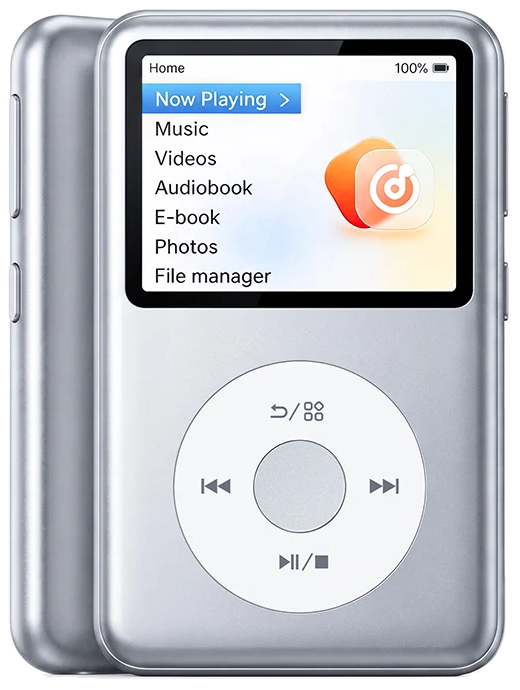
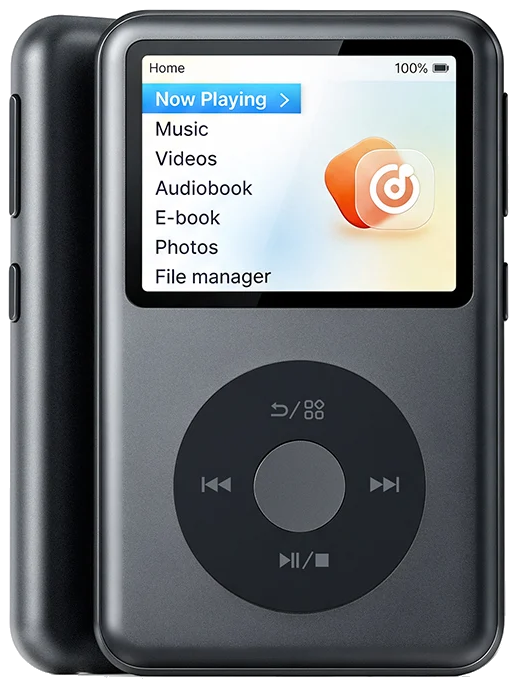
Play On
Your Sonos or smart TV plays the song. The wheel stays in control.
Bluetooth in the car
Title, artist and a progress bar on the car screen. It pauses when the car turns off, and plays on when you come back.
Lyrics in two scripts
Synced lyrics in the original script, romanised, or both, line under line.
Cover Flow that keeps up
The iPod order and layout, smooth on a fast spin, and a letter jump in every list.
Tuned, not themed
Two themes, on purpose. Each screen is tuned to look and move like the iPod classic.
Wi-Fi that does something
Jellyfin sync, podcasts, upload from a browser, and the correct time from the internet.
The polish
It looks like an iPod. It moves like one.
The user interface is the point. Each screen uses the measurements of the iPod classic: a 30 px status bar, 38 px rows with a drawn chevron, the menu shadow over the album art. Then we tuned it on the Y2, frame by frame.
- The album art next to the menus pans and zooms slowly, as on the iPod.
- Menus slide in from the right and out to the left. Into Cover Flow, the list and the art move apart.
- Back goes to the row that you came from, at the same height in the list.
- No Android pop-ups are left: menus, questions, notices and waits are iPod screens that the wheel can use.
Two themes, on purpose
Classic Light. Classic Dark. Nothing half-done.
The themes are locked on purpose. There are two, and every screen, row, icon and colour is tuned for both. You get one look that works everywhere, not a skin that breaks on the screen you open next.
- Auto: Classic Light by day, Classic Dark after sunset, from your time zone.
- A theme change applies at once. The music keeps playing, and you stay on the same row.
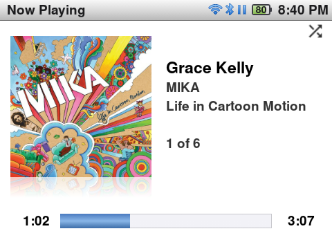
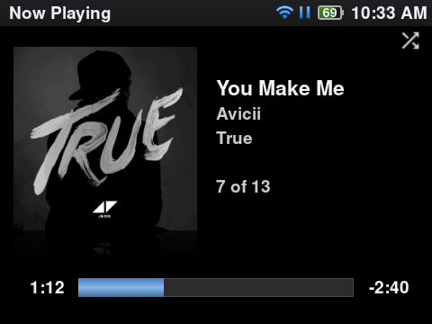
Cover Flow
Spin through 500 albums. No stutter.
Cover Flow has the positions, reflections and order of the iPod: by artist, then album, without a leading “The”. We made each step do much less work. In a test of 30 fast wheel steps, the frames that came late went from 83 to 4.
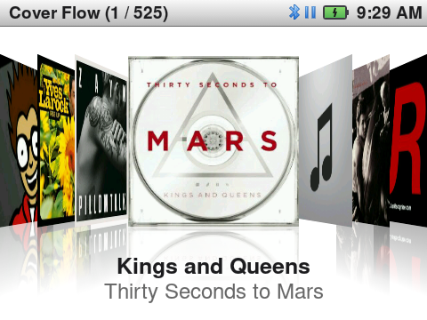
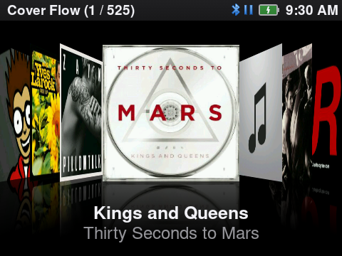
- The text under each cover shows the album artist, or “Various Artists” for a compilation.
- The first Cover Flow after a start is as fast as the next ones: the covers are ready in the background.
Letter jump
4,000 songs? Turn faster.
Turn the wheel fast and the list goes letter by letter, with a large letter box, as on the iPod. It works in all alphabetical lists and in Cover Flow. Stop for a moment, and the wheel moves row by row again.
Now Playing
The screen you look at most.
An angled cover with a reflection, a glass progress bar and iPod times: 2:08, -0:34, 1:02:08.
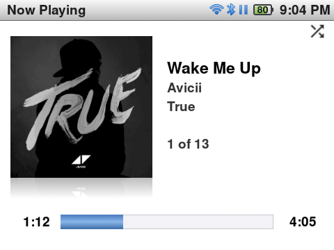

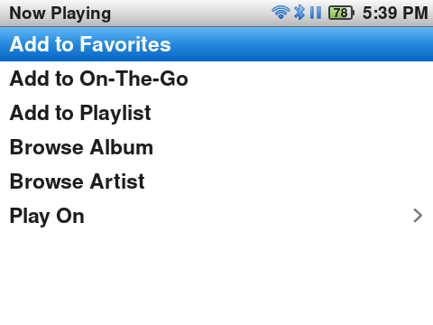
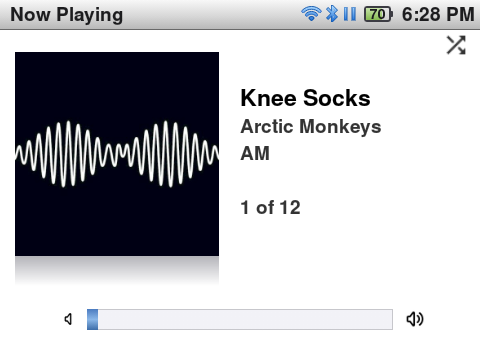
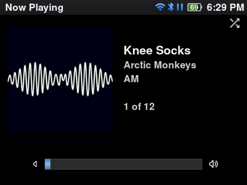
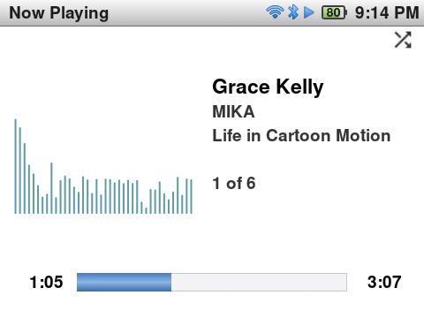
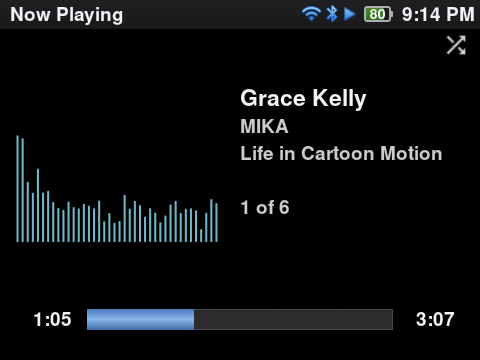
- The song menu: Add to Favorites, Add to On-The-Go, Add to Playlist, Browse Album, Browse Artist, Play On.
- 30 equal volume steps of 2 dB, kept for each output: speaker, headphones, Bluetooth.
- Hold Next or Previous to seek, from 4× up to 120×. Hold Play/Pause to stop.
- Total Time shows the length of the song in place of the time left.
Lyrics
Sing along. In two scripts.
One push of the centre button shows the lyrics over the full screen. Synced lyrics follow the song, with soft fades at the top and bottom edges.
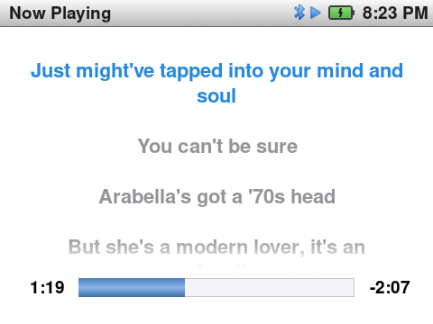
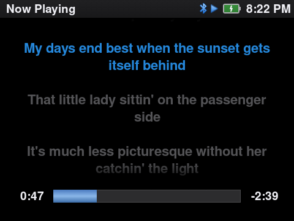
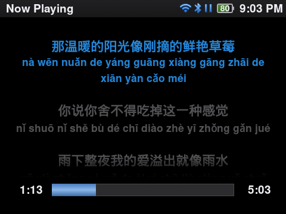
- Choose Original, Romanised (pinyin, romaji) or Original + Romanised: the romanised line shows under each original line.
- From
.lrcfiles next to the song or from the tags (MP3USLT, FLAC, ALAC); romanised lines come from a.romanised.lrcfile. - The screen stays on while the lyrics show and the music plays.
Play On · new
Your Sonos plays it. Your TV plays it.
Speakers on Wi-Fi only, such as a Sonos, have no Bluetooth. Play On sends the song to them, and to smart TVs with Google Cast or DLNA. No phone, no app, no Google Play Services.
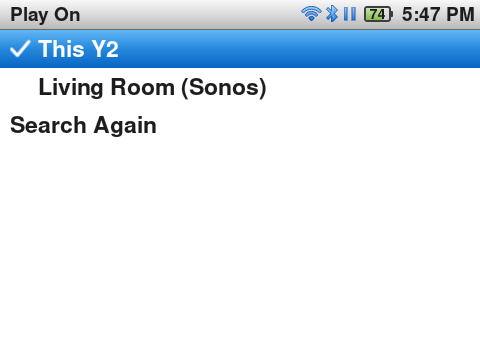
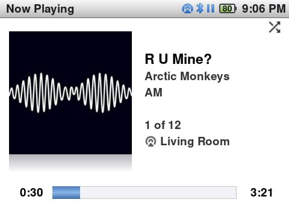
- The wheel stays in control: next song, pause, seek and volume go to the speaker. A pause in the Sonos app comes back to the Y2.
- The Sonos app shows the title, artist, album, progress bar and cover.
- The speaker icon takes the place of the Wi-Fi icon, and Now Playing shows the speaker name.
Bluetooth
Earbuds, headphones, and the car.
Pair with the wheel only: the Y2 answers each pairing step itself and shows the pairing code on its own screen.

In the car
The car shows the title, artist, album and a progress bar. Its steering-wheel buttons work with the screen off. No access prompts for contacts or messages.
Pause and resume
Turn the car off or take the earbuds out: the music pauses. Connect again within 4 hours, and it plays on at the same place.
Headphones
Unplug wired headphones and the music pauses. The volume is kept for each output.
Wi-Fi
Wi-Fi that does something.
The Y2 has Wi-Fi. Here it plays, syncs and downloads, all from the wheel.
Play On
Sonos, DLNA and Google Cast speakers and TVs on the same network.
Jellyfin sync
Sign in with QuickConnect, then sync music and audiobooks from your own server.
Podcasts
Subscribe to feeds, stream an episode, or download it for later.
Upload from a browser
Turn on the web server and drag files into a page on your computer. No cable.
Correct time
Sync Time Now sets the clock from the internet, in your time zone.
For tinkerers
Wireless ADB in Settings → Developer, and Save Log for bug reports.
FM Radio
Radio, the iPod nano way.
Main menu → FM Radio opens the tuner and turns the radio on, on the last station. Push Menu for the Radio menu.
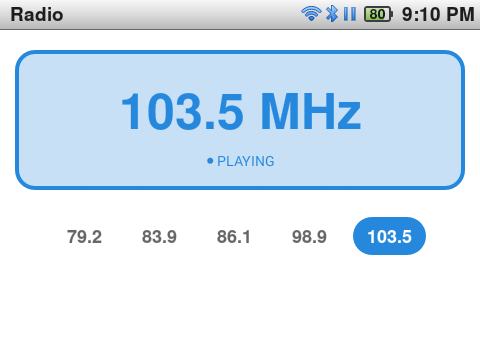
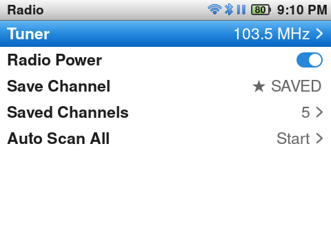
- While the radio plays, Play/Pause pauses it and Next/Previous go to the next saved station, from any screen.
- One sound at a time: music starts, the radio stops; the radio starts, the music pauses.
- It plays on with the screen off.
Your library
All your music, the iPod way.
Artists, Albums, Compilations, Songs, Genres, Composers, Playlists and Folders. Hide or reorder the items you do not use. Shuffle Songs plays the whole library.
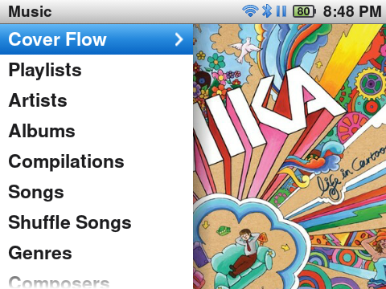
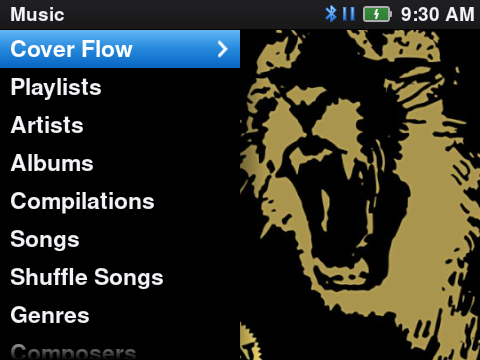
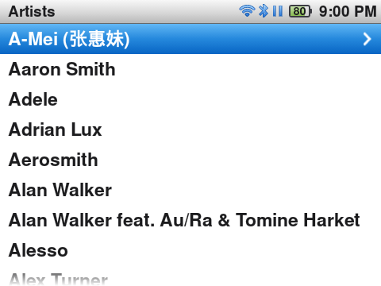
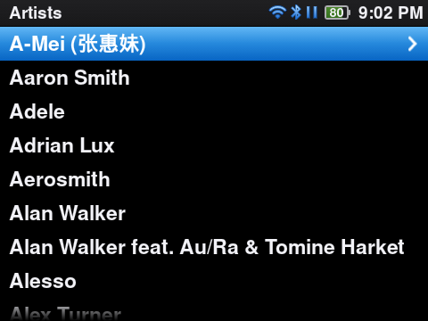

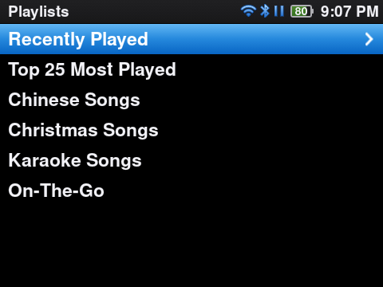
- MP3, FLAC, WAV, OGG Vorbis, Opus, ALAC and AAC, on the internal storage and the microSD card.
- A play counts after half the song (or 4 minutes), for Top 25 and for
.scrobbler.log(Last.fm, ListenBrainz). - Audiobooks with a bookmark for each book, and videos.
Details
Small things, done right.
- Settings in iPod groups (Playback, Display, Now Playing, Status Bar…) with On/Off switches. Export and import all settings as one file.
- Each push does one action, on release. One vibration for each step; the click has its own volume.
- Notices in a small box, and waits with the iPod progress bar or spinner, not Android toasts and dialogs.
- Hold the Power button: a Power screen (Restart, Power Off) that the wheel can use.
- A “Battery low” banner at 10 % and an iPod Please charge screen at 2 %.
- Connect the USB cable and choose Connect as Storage: the Y2 shows on your computer as a disk.
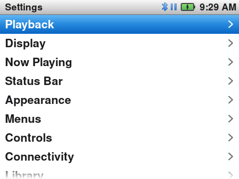
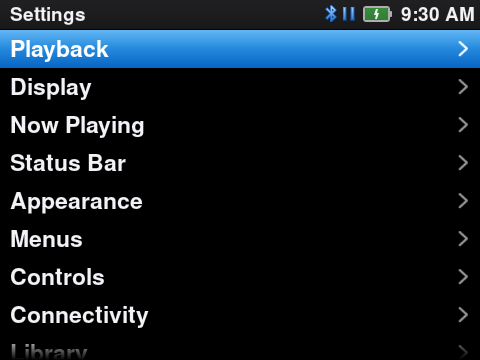
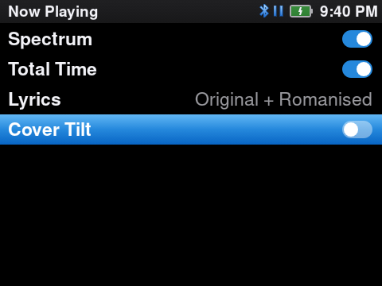
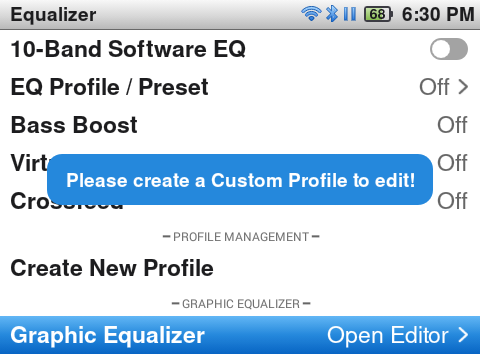
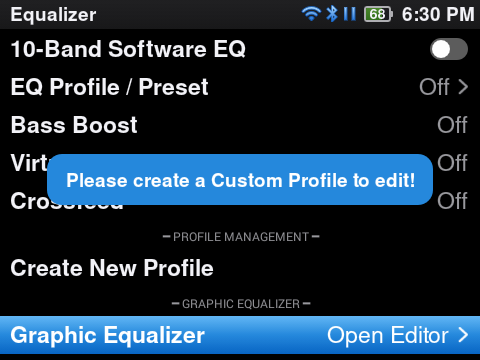
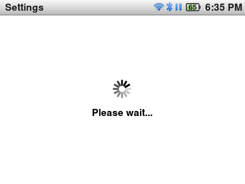
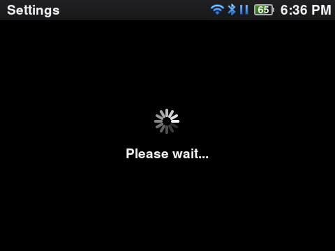
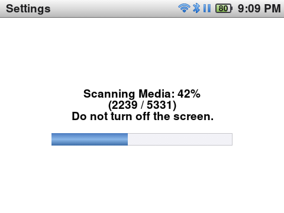
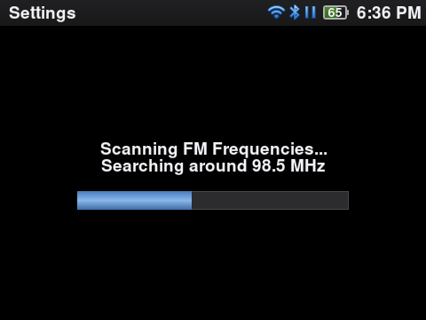
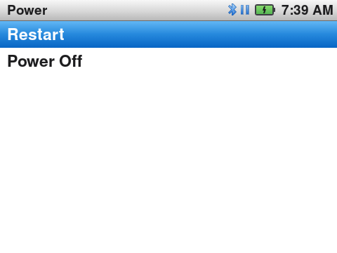
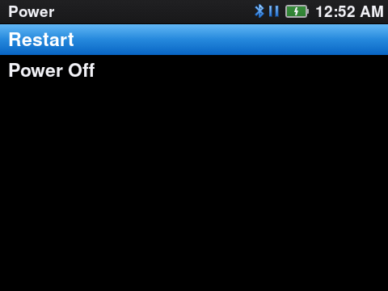
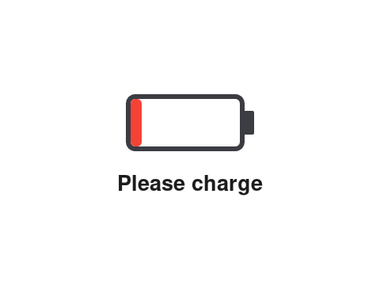
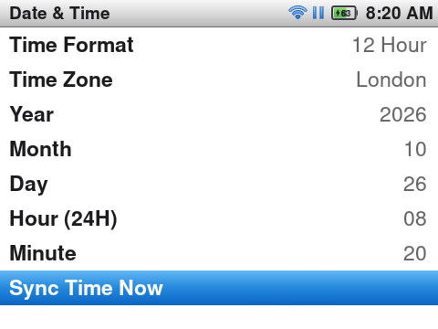
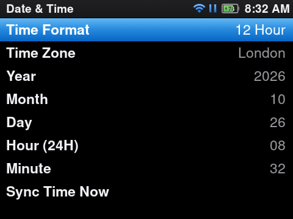
Install
Try it on your Y2.
Pre-releaseThe download is a test build on GitHub, y2-20261029.25: the firmware zip (rom_y2.zip), the APK and the checksums.
Firmware
- Download
rom_y2.zipfrom the pre-release. - Open the Innioasis Updater and choose the zip as the local firmware package.
- Follow the steps. When the Y2 restarts, it starts in the main menu.
A full flash erases the internal storage. Music on the microSD card stays. Keep the cable in until the update is done.
App only (APK)
On a Y2 that already runs InniClassic (the firmware has ADB on), connect the USB cable:
adb uninstall com.themoon.y1
adb install InniClassic-y2-20261029.25.apkUninstall first only if the APK has a different signing key. Your music and playlists on the card stay.
Build it yourself
JDK 17 and the Android SDK:
git clone
cd
./gradlew assembleDebug